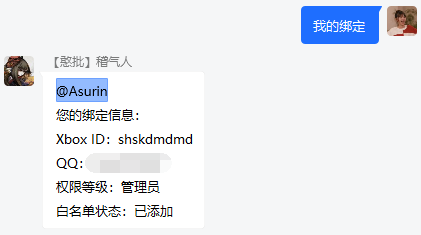
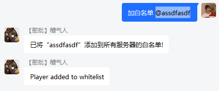
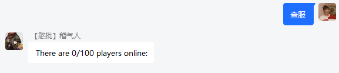
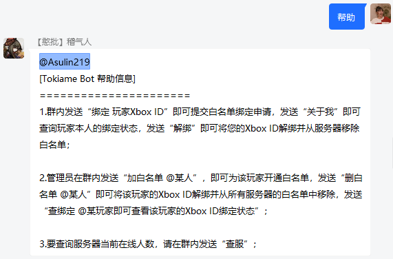

XBridgeN：配置
全局配置
全局配置文件为/config/global_setting.json ，用于保存QQ登录、WebSocket连接等相关配置信息。以下是配置示例（正式配置时，请不要在文件内写注释）：
{
"qq": 123456, //机器人QQ账号
"login_qrcode": true, //是否使用扫码登录，默认为true。如使用密码登录，请改为false
"qq_password": "qqpassword", //机器人QQ密码。仅在"login_qrcode"为false（使用密码登录）时，该项配置才有效
"ws_address": "ws://127.0.0.1:8080", //Websocket服务端地址
"ws_password": "wspassword", //WebSocket通信密钥，请与WebSocket服务端通信密钥保持一致
"qq_group": [
"123456" //QQ群号，目前暂时只支持一个QQ群
],
"server_name": "生存服务器", //服务器名称，目前暂时只支持一个服务器
}
正则表达式
正则表达式配置文件为/config/regex.json，用于保存群消息自动应答规则。当玩家在群内发送消息时，如果发送的文本和正则表达式中的关键词匹配，且玩家权限与该段关键词的所需权限匹配，即可触发相应的功能。配置示例如下：
[
{
"keywords":"^绑定 ([A-Za-z0-9 ]{4,20})$", //正则表达式，用于匹配群消息中的关键词
"permission":0, //执行动作所需权限，0为普通成员，1为管理员
"actions":[ //关键词匹配时执行的动作，支持一个或多个
{
"type":"bind_whitelist", //动作类型，见说明
"content":"白名单申请已发送，请等待管理员审核！" //动作内容，见说明
}
]
}
]
XBridgeN默认包含了默认的正则表达式配置。用户也可以对正则内容进行修改，满足各种使用需求。以下是正则表达式的配置示例以及实现的效果：
自助绑定白名单
keywords（关键词）|permission（权限）|type（动作类型）|content（内容）| --|--|--|--|-- ^绑定 ([A-Za-z0-9 ]{4,20})$|0|bind_whitelist|白名单申请已发送，请等待管理员审核！
自助解绑白名单
keywords（关键词）|permission（权限）|type（动作类型）|content（内容）| --|--|--|--|-- ^解绑$|0|unbind_whitelist|解绑成功|
查询本人绑定状态
keywords（关键词）|permission（权限）|type（动作类型）|content（内容）| --|--|--|--|-- ^关于我$|0|bind_check_self|我的信息：|

为目标玩家添加白名单
keywords（关键词）|permission（权限）|type（动作类型）|content（内容）| --|--|--|--|-- ^加白名单 (.+$)|1|add_whitelist|已将该玩家添加到所有服务器的白名单!|

删除目标玩家的白名单
keywords（关键词）|permission（权限）|type（动作类型）|content（内容）| --|--|--|--|-- ^删白名单 (.+$)|1|del_whitelist|已将该玩家从所有服务器的白名单中移除!|
查询目标玩家的绑定状态
keywords（关键词）|permission（权限）|type（动作类型）|content（内容）| --|--|--|--|-- ^查绑定 (.+$)|1|bind_check|查询结果：|
执行服务器控制台指令（以“查服”为例）
keywords（关键词）|permission（权限）|type（动作类型）|content（内容）| --|--|--|--|-- ^查服$|1|runcmd|list|

发起异步http GET请求（以“百度”为例）
keywords（关键词）|permission（权限）|type（动作类型）|content（内容）| --|--|--|--|-- ^百度$|0|http_get|http://www.baidu.com|
自动应答群消息（以“帮助”为例）
| keywords（关键词） | permission（权限） | type（动作类型） | content（内容） |
|---|---|---|---|
| ^帮助$ | 0 | group_message | [Tokiame Bot 帮助信息]...... |

实体数据
实体命名配置文件为./config/mobs.json，用于保存实体（玩家、生物）命名。当玩家/生物被杀时，会通过该文件的内容将死亡事件转发到群内。以下是配置示例（文件过长，以下只展示一部分）：
{
"Arrow": "箭",
"Bat": "蝙蝠",
"Creeper": "爬行者",
"Blaze": "烈焰人"
}
效果：

玩家配置
玩家配置文件为./config/players_info.json，用于保存玩家的各项信息。一般情况下无需改动。如果需要将玩家设置为机器人管理员，只需将"permission"项的值修改为1即可。以下是配置示例：
[
{
"name": "Asurin", //玩家昵称（Xbox ID）
"qqid": 824907403, //玩家QQ账号
"permission": 0, //玩家权限，默认为0。0为普通成员，1为管理员
"enable": false //绑定状态，false为已绑定、未添加白名单，true为已绑定、已添加白名单
}
]